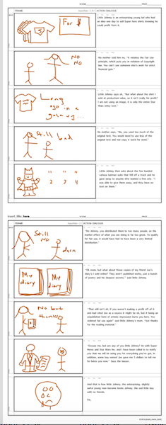
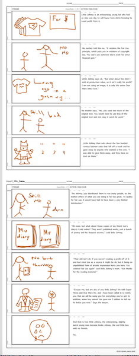
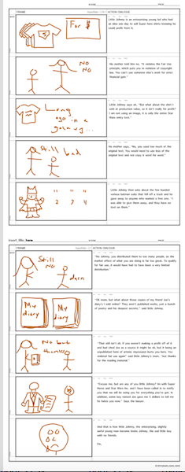

Work In Progress 2
Reflection Post
Designing my own website has been an experience. It has been an experience that has had very positive and very negative moments thus far for me. For example, sitting in front of my laptop and trying again and again to get some element to work is an exceedingly frustrating experience, especially when you don’t know why something isn’t working how you want it to. Now, in my experience so far, this frustration can end with total annoyance if it was a small mistake like a missing end tag and you’ve wasted an hour looking up how to fix it. It can end with a feeling of immense accomplishment if you finally get something to work after putting in so much time. So far I have had my fair share of both I think. Regardless of the ending feelings, I start every assignment the same way, looking to review and build off of what I already know. In short, I know a lot more than I did when I started, but I am definitely still not a pro.
Over the course of work in progress two, I have noticed a switch on how I look at assignments in and out of class. In class, instead of trying to gain a thorough understanding of how and why things work, I now look at is as a base understanding or introduction that I can build from. It is much more effective I think to simply try and gain a sense of the basics, and not try and overextend myself and understand nothing. This allows me out of class to have a base knowledge that I can build from, a lesson that was brought on while working on my individual study.
For this assignment I went back and revisited the writings that I have done for the class so far and I revised them. I noticed that originally I had written that I wanted my website to be entirely professional, and I have since switched gears on this topic. I did a lot of things to change my website and give it a little more of an inviting feel. For example, I used a lot of contrast to emphasize my text, I changed my color scheme from a dull yellow to a more inviting blue, and in addition, I used layering and motion to try and highlight my welcome page and get rid of the static feel of the website. In addition, in the first work in progress, I went back and revised my goals that I had from this class. In the first work in progress reflection, I may have overshot my goals for this class. I mentioned not only fully picking up HTML, but also picking up JavaScript and mastering Photoshop as things I would like to accomplish. I realize now that this is not overly realistic. People spend years on some of these things, turning them into careers and don’t accomplish these original goals, so I adjusted them, challenging myself but at a more reasonable level.
Looking back, I can see a huge difference in comfort I have when dealing with HTML from the beginning of the class and now, as well as with Audacity and Photoshop. After all its hard to go down from no experience. Now, moving forward I don’t think that I am done yet. I would like to continue to improve on what I already have, continuing to be able to add new aspects, and perhaps clean up what I already have. Looking forward, there are also things that I would like to add to my website still. I know I had previously stated my desire to give the website more personality, but that doesn’t mean I wanted it to lose any kind of functionality or professionalism. As I originally stated in my first ever post for this class, something I look for in a website is one that is organized and functioned. In an effort to clean up some of the links I have and give my website a slightly more streamlined feel, I think it would be good to try and compress my sidebar, and maybe work to create a pop out menu, so that a few of my links were under one heading. I would also really like to get to the point where I would be comfortable going through my code and fixing the more pieced together parts and make it a little more functional so it works on all formats and all sizes of the screen. There is still a lot that I can get better at, and it is a goal of mine that I continue to get more comfortable with the program moving forward as I try and fit the website more and more towards my goal for it.
Soundscape and Expanded Soundscape
Original Soundscape
Photo Editing
 

Photo Editing
